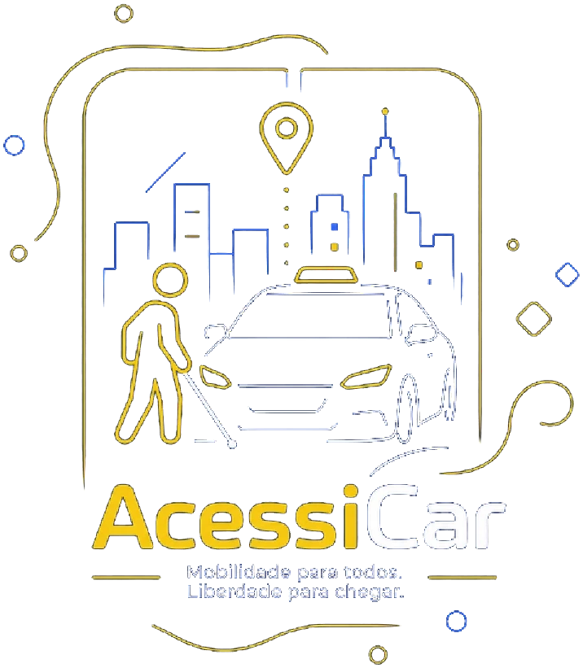

Tecnologia Assistiva
Ferramentas e recursos para a autonomia visual
Esta página reúne ferramentas tecnológicas, aplicativos e dicas práticas que ajudam pessoas cegas ou com baixa visão a navegar na internet e a realizar tarefas do dia a dia com mais independência.
Ferramentas
Úteis para o dia a dia
Conheça aplicativos e programas gratuitos que ampliam a independência de pessoas cegas ou com baixa visão. Cada botão abre a página oficial da ferramenta.
-
Be My Eyes (Seja Meus Olhos)
Este aplicativo gratuito conecta pessoas cegas ou com baixa visão a voluntários e à inteligência artificial por chamadas de vídeo ao vivo. O voluntário ou a IA ajudam a ler rótulos de produtos, identificar cores de roupas, checar datas de validade e reconhecer ambientes.
Celular · Android e iPhone · Gratuito
Baixar o Be My Eyes -
Seeing AI (criado pela Microsoft)
Um aplicativo que usa a câmera do celular para descrever o mundo ao seu redor. Ele lê textos curtos assim que aparecem na tela, escaneia códigos de barras de produtos e até reconhece as emoções no rosto das pessoas.
Celular · Android e iPhone · Gratuito
Conhecer o Seeing AI -
NVDA (leitor de tela para computador)
Para navegar no computador, pessoas cegas usam leitores de tela: programas que leem em voz alta tudo o que está na tela. O NVDA é gratuito, feito para Windows e usado no mundo todo — essencial para garantir o acesso a estudos e trabalho.
Computador · Windows · Gratuito e livre
Baixar o NVDA
Uma ideia da turma
AcessiCar
As três ferramentas acima existem e você pode baixar hoje. Esta não — ainda. O AcessiCar é um projeto conceito criado por alunos da escola: um aplicativo de transporte pensado desde o começo para ser usado sem enxergar.
Projeto conceito — não é um aplicativo real e não está disponível para baixar.

O problema que ele resolveria
-
Barreiras diárias
Pessoas cegas ou com baixa visão enfrentam obstáculos constantes para se locomover com autonomia.
-
Apps inacessíveis
Os aplicativos comuns exigem leitura visual e interações complexas — excluindo justamente quem mais precisa.
-
Dependência e exclusão
A falta de acessibilidade gera insegurança e dependência de terceiros.
-
Transporte público que falha
Nem sempre é seguro, acessível ou previsível para quem tem deficiência visual.
Como funcionaria
Cinco paradas — todas acessíveis por voz, toque ou áudio. Role para percorrer o trajeto.
-
Abrir o app
Uma tela só, sem menus escondidos.
-
Informar o destino
Falando. O app entende e confirma por áudio, sem digitar nada.
-
Solicitar o carro
Um único toque, em qualquer lugar da tela — sem leitura visual.
-
Encontrar o motorista
Nome, avaliação, modelo do carro e tempo de chegada: tudo em áudio.
-
Chegar
A rota é narrada durante todo o percurso, com aviso sonoro na chegada.
Segurança pensada para quem não vê a tela
-
Identificação prévia
Foto e placa do motorista confirmadas por áudio antes de entrar no carro.
-
Compartilhamento em tempo real
A viagem vai automaticamente para contatos de confiança.
-
Botão de emergência
Acionado por voz — sem precisar ver a tela.
-
Confirmação por áudio
Aviso sonoro ao chegar com segurança ao destino.
E tudo ajustável: velocidade da narração, alto contraste, tamanho da fonte e comandos de voz — a mesma ideia que guia este site. Como diz o projeto deles: “outros levam você até o destino; o AcessiCar leva você com autonomia”.
Projeto conceito de Lucas Valim, Cecília Betin e Heverton Viana.
A tecnologia só é assistiva quando chega até quem precisa.
Nenhum desses aplicativos funciona sozinho: eles dependem de sites, documentos e aplicativos feitos com acessibilidade. É por isso que este portal existe — e por isso ele próprio foi construído para ser lido por leitores de tela.